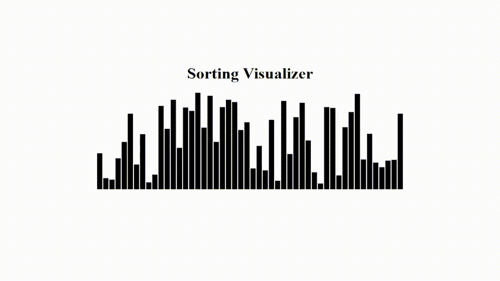

In this assignment you will continue working with the Sorting Visualizer we built in class. You will send an updated version of your code and a Word document report (for the final task only) packaged as a .zip file. While doing this assignment, I recommend you remove those VS Code settings I gave you in the beginning of the course, and pay attention if it behaves differently!

This last task is more challenging and I don't expect many students will solve it perfectly. Therefore, I'll be grading the effort, not just the result and that's why the Word file is for! Explain in it how you approached solving the problem: what worked and what didn't. For max points, the report should show that you really tried (~ 2 hours of work).